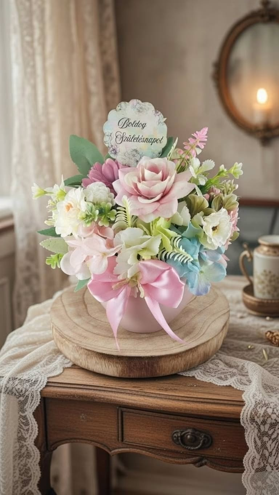
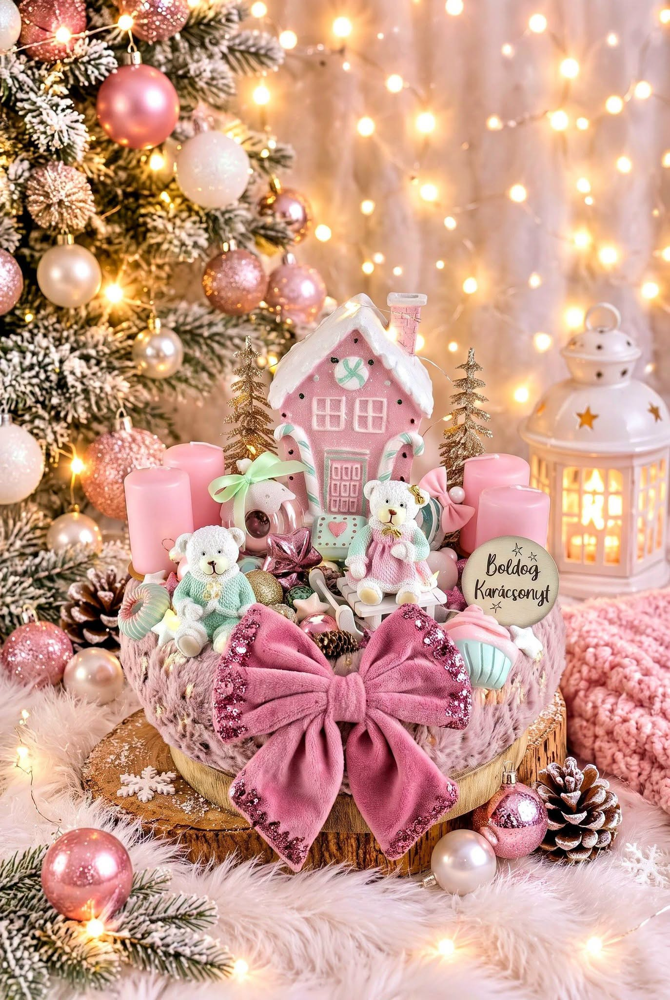
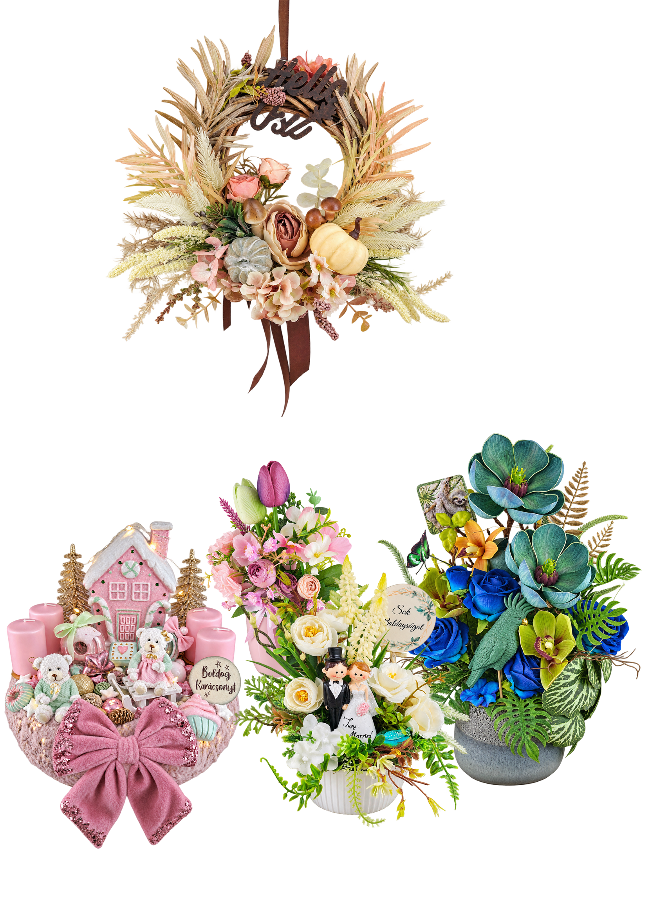

Árak és fizetés
A meglévő díszek árait a Facebook-oldalamon találod, egyedi megrendelésnél pedig előre egyeztetjük az árat. Fizetni előre utalással vagy személyes átvételkor készpénzben tudsz.
Egyedi kézműves díszek és ajándékok
Egyedi, kézzel készült dekorációk az otthonodba, ünnepi alkalmakra vagy ajándékba, ha valami igazán személyeset keresel.
Legyen szó szezonális dekorációról, ünnepi ajándékról vagy egyedi elképzelésről, minden alkotásomat gondos odafigyeléssel készítem. Nézz körül a Facebook-oldalamon, ahol az aktuális kínálatot találod, vagy írj nekem, ha saját ötletedet szeretnéd megvalósítani!
Megnézem az alkotásokat Egyedi díszt szeretnék





Ajándékok és dekorációk minden alkalomra
Bármilyen alkalomra is keresel díszt vagy ajándékot, nálam sokféle különleges alkotás közül válogathatsz. Ha pedig mégsem találod meg az igazit, szívesen elkészítem a saját elképzelésed alapján is!
Ki van a Csiriviri mögött?
Évi vagyok, a Csiriviri megálmodója. A kreativitás és a kézzel készített ajándékok szeretete már régóta az életem része. Kezdetben a családomat, barátaimat és ismerőseimet leptem meg saját készítésű díszekkel, dekorációkkal, mert mindig örömet jelentett számomra valami személyeset alkotni. Idővel az ő biztatásukra kezdtem másoknak is készíteni, és így született meg a Csiriviri Kézműves Ajándékok.
Azóta egyre többféle alkotás kerül ki a kezeim közül, az ünnepi és szezonális dekorációktól az egyedi ajándékokig. Szeretem a különleges színvilágokat, a bájos figurákat és az aprólékosan kidolgozott részleteket, amelyek minden dísznek saját karaktert adnak. Szívesen valósítom meg a megrendelőim elképzeléseit is, hiszen sokszor egy személyes ötletből születnek a legkedvesebb alkotások.
Nálam minden dísz egyedileg, gondos odafigyeléssel készül. Fontos számomra, hogy az elkészült alkotás ne csak szép legyen, hanem valódi örömet is szerezzen annak, aki kapja vagy az otthonában elhelyezi. A legnagyobb elismerés számomra, amikor visszatérnek hozzám a vásárlóim, vagy megmutatják, milyen szép helyet kapott náluk egy-egy munkám.
Egyedi megrendelések
Szeretnél egy igazán személyes díszt vagy ajándékot? Írd meg, mit képzeltél el, milyen alkalomra készülne, és milyen színeket, hangulatot szeretnél. Örömmel segítek megvalósítani az ötletedet, a részleteket és a lehetőségeket pedig együtt egyeztetjük.
Elmesélem az ötletemetA megrendelés menete
Megtetszett egy díszem a Facebook-oldalamon, vagy inkább valami egészen mást képzeltél el? Írj nekem bátran, és örömmel segítek megvalósítani az elképzelésedet!
Ha saját ötleted van, megbeszéljük, hogyan valósítható meg. Ha egy meglévő díszt választottál, egyeztetjük az elérhetőségét, majd pontosítjuk az árat és a várható elkészítési vagy átvételi időt.
Kiválaszthatod a számodra megfelelő szállítási módot, vagy megbeszélhetjük a személyes átvételt. A részletek egyeztetése után elküldöm a számlát.
A fizetést követően gondosan becsomagolva útnak indítom a díszedet, vagy a megbeszéltek szerint személyesen is átveheted.
Hasznos tudnivalók
A meglévő díszek árait a Facebook-oldalamon találod, egyedi megrendelésnél pedig előre egyeztetjük az árat. Fizetni előre utalással vagy személyes átvételkor készpénzben tudsz.
Budapest XIX. kerületében személyes átvételre is van lehetőség, de az ország egész területére vállalok csomagküldést. A szállítás módját és díját előre egyeztetjük.
Minden alkotást nagy odafigyeléssel csomagolok, hogy épségben érkezzen meg hozzád. Amikor csak lehet, újrahasznosított dobozokat és csomagolóanyagokat használok.
Alkotásaim nagy része egyedi, ezért nem mindig készül belőlük több ugyanolyan darab. Ha egy korábban látott dísz már elkelt, írj bátran, és megbeszéljük, készíthető-e belőle újabb vagy hasonló.
Csiriviri kézműves workshopok
Szeretnél kiszakadni egy kicsit a hétköznapokból, és saját kezűleg elkészíteni valami szépet? Budapesten, a XIX. kerületi LakásMűhelyemben időnként 6-8 fős, családias hangulatú kézműves foglalkozásokat tartok kicsiknek és nagyoknak, ahol jó társaságban, kellemes légkörben alkothatunk együtt.
Nemcsak a LakásMűhelyben találkozhatunk! Szívesen ellátogatok hozzátok vagy más választott helyszínre is, ha saját társasággal szeretnétek közösen alkotni. A workshopok általában 3-4 órásak, de a pontos időtartam az elkészítendő dísz összetettségétől függ.
Az aktuális foglalkozások témáit és időpontjait a Facebook-oldalamon hirdetem meg. Ha pedig külön alkalmat szeretnétek szervezni, keress bátran, és beszéljük meg a lehetőségeket!
Kövess a Facebookon! Workshopot szeretnék
Kézműves díszek
Az aktuális díszeket és a következő műhelyalkalmakat a Facebook-oldalon találod.
Rólam mondtátok
Gyakori kérdések
A Facebook-bejegyzésnél jelzem, ha elkelt; az aktuális elérhetőségről üzenetben érdeklődj.
Igen. Írd meg az alkalmat, a színeket és az elképzelésedet.
Ez az adott darabtól függ; a lehetőségeket egyeztetjük.
Csomagküldésnél előre utalás és számla alapján. A szállítás módját és díját rendeléskor egyeztetjük.
Budapest XIX. kerületében, előzetes egyeztetéssel.
Az aktuális alkalmakat a Facebook-oldalon hirdetem meg.
Kapcsolat
Írd meg, melyik dísz érdekel, vagy mesélj a saját ötletedről. A Facebookon látott alkotáshoz Messengeren is írhatsz.